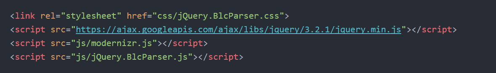

Что это?
Виджет-информер текущих курсов валют.
На чем сделан виджет?
Данный виджет-информер написан на JavaScript, jQuery, PHP
Как это работает?
Виджет парсит xml-файл от Центробанка РФ с текущими курсами.
Схема работы: PHP-скрипт скачивает раз в сутки к вам на сервер / хостинг xml-файл.
Далее, JS-ом из xml вытаскиваются текущий курс и выводится в браузере.
Установка
1. Распаковываем архив себе на сервер / хостинг
(обязательно на сервере должен работать PHP)
2. Запускаем файл 'cb.php' (открыть в браузере)
Запустить надо будет 1н раз, далее скрипт будет самостоятельно
раз в сутки обновлять XML-файл из ЦБ.
3. Между тегами 'head' подключаем основные файлы.

4. Вставляем виджет в любое удобное место.
5. Внизу, до закрывающего тега /body вызываем наш виджет.
Настройка
money: - отображаемые валюты
time: - выводит дату, true - показывать, false - нет
roundedNumber: - округление валют после точки, true - округлить, false - нет
background: - цвет окна виджета
color: - цвет текста
fontsize: - размер текста
fontfamily: - шрифт текста
ajaxurl: - путь до xml.файла
Доступные валюты
aud Австр-ий доллар
azn Азерба-ий манат
gbr Анг-кий Фунт
amd Армянских драмов
byn Белору-ий рубль
bgn Болгарский лев
brl Бразильский реал
huf Венг-ких форинтов
hkd Гон-ских долларов
dkk Датских крон
usd Доллар США
eur Евро
inr Индийских рупий
kzt Казах-ских тенге
cad Канадский доллар
kgs Киргизских сомов
cny Китайских юаней
mdl Молдавских леев
nok Норвежских крон
pnl Польский злотый
ron Румынский лей
xdr СДР
sgd Синга-кий доллар
tjs Тад-ких сомони
try Турецкая лира
tmt Туркм-кий манат
uzs Узбекских сумов
uah Укр-ких гривен
czk Чешских кро
sek Шведских крон
chf Швейц-кий франк
zar Южноаф-х рэндов
krw Вон Корея
jpy Японских иен
Модернезация
Внимание! Любые изменения в коде вы делаете на свой страх и риск.
Если вы не уверены в своих знаниях, лучше остановитесь сейчас.
Далее... Редактируем 'jQuery.BlcParser.js' и 'jQuery.BlcParser.css'